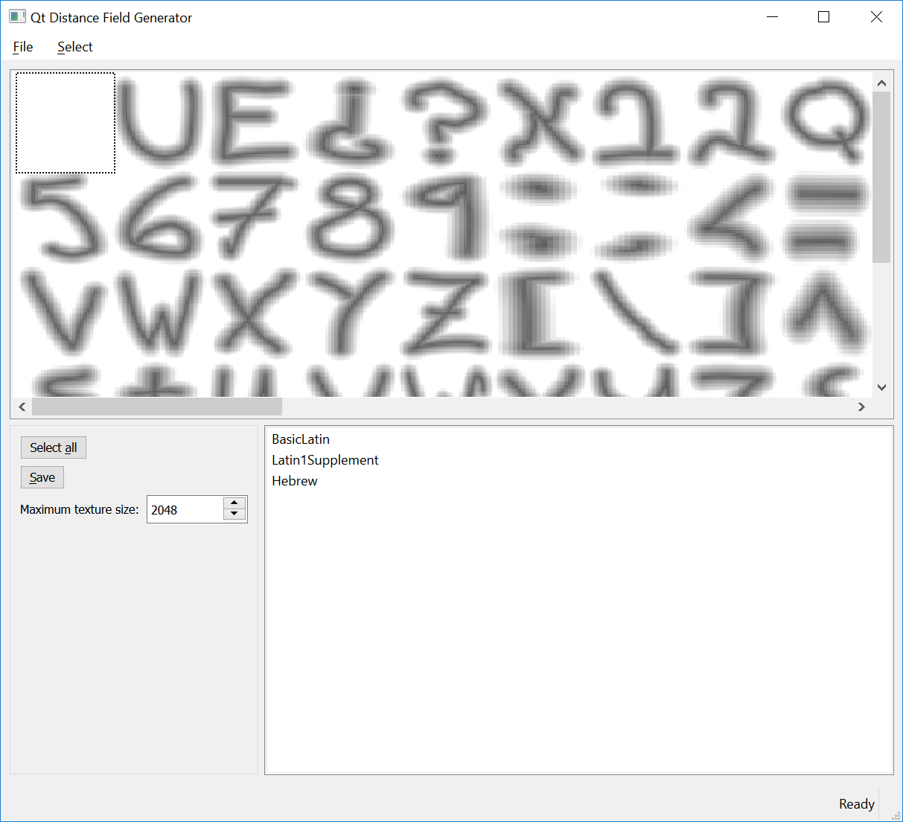

Qt Distance Field Generator Manual
If the user interface of an application has a lot of text, it may cause a small, but noticeable, performance impact the first time it is displayed to the user. This is especially true if the text is rendered in multiple different fonts or use a large amount of distinct characters (common for instance in writing systems such as Hanzi, written Chinese).
The reason is that in order to render the text efficiently later, Qt will spend some time creating graphical assets for each of the glyphs that will later be reused. This happens the first time a glyph is displayed in the scene.
For advanced users who want to optimize startup performance, it is possible to pregenerate this font cache, as long as Text.QtRendering is the rendering type in use. The Qt Distance Field Generator tool can be used to pregenerate the cache, either for all glyphs in the fonts, or just a selection that are known to be displayed during a critical phase.
Note: This is a tool that may be used by advanced users to streamline their application in ways that cannot be done automatically by Qt. For most common use cases, the default behavior in Qt will be sufficient.

General Usage
Use the Qt Distance Field Generator in the following way:
- Load a font file with File > Open font. If the font file is large, there will be some waiting as it reads the fonts and generates the distance fields.
- Once this is done, select the glyphs that you want to save in the pregenerated cache. This should ideally be the glyphs that are used by your application during a performance-critical phase, so that doing the generation ahead of time will give a visible impact on performance.
- Finally, click Save to save the new font file.
Note: In order to modify a font in this way, you will need to make sure its license does not prohibit it.
Selecting Glyphs
Glyphs can be selected in multiple ways. The simplest way is to click the grid of glyphs to select a particular glyph. You can cancel the selection by clicking on the glyph again.
In addition, you can use the list of Unicode ranges to select all glyphs matching the characters in a certain range.
If you want to make sure you pregenerate the glyphs for a specific string from your user interface, you can use the Select > Select string function.
Note: Both of the two latter selection methods base the results on the CMAP table in the font and will not do any shaping.
Using the File
Once you have prepared a file, the next step is to load it in your application. The saved file is a copy of the original font file, and can thus be used in the same ways as any other font file. In addition, it has a special font table which is recognized by Qt and used to prepopulate the glyph cache when the font is used in Qt Quick.
You can, for instance, load the font using a FontLoader in your application code. When it is used to display text in a Text element with renderType set to Text.QtRendering (the default), then the pregenerated cache will be loaded and used.
Measuring performance
For analyzing the impact of distance field generation on your application, you can set the QT_LOGGING_RULES environment variable to "qt.scenegraph.time.glyph=true".
When using normal fonts with no built-in cache, you will give output similar to this:
qt.scenegraph.time.glyph: distancefield: 50 glyphs prepared in 16ms, rendering=15, upload=1
If you have pregenerated all the glyphs in use, the output will instead read something like this:
qt.scenegraph.time.glyph: distancefield: 50 pre-generated glyphs loaded in 2ms
In this case, the time used to prepare the distance fields used to render in the application has been reduced from one full frame (16 ms) to 2 ms. You can also use the output to verify that all the glyphs in use are being loaded from the cache and to identify problematic phases in your application's life cycle, performance-wise.